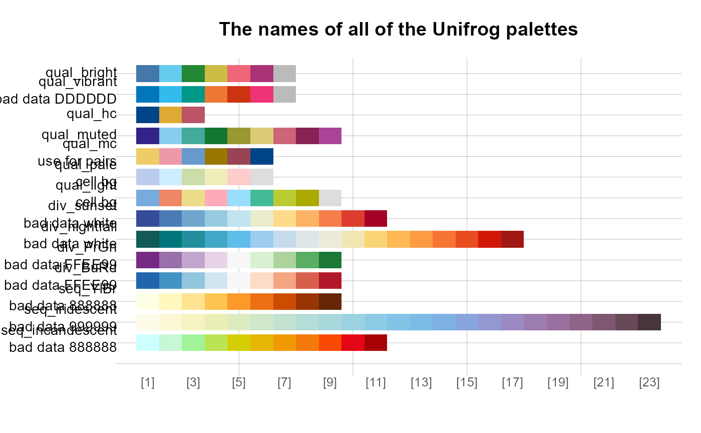
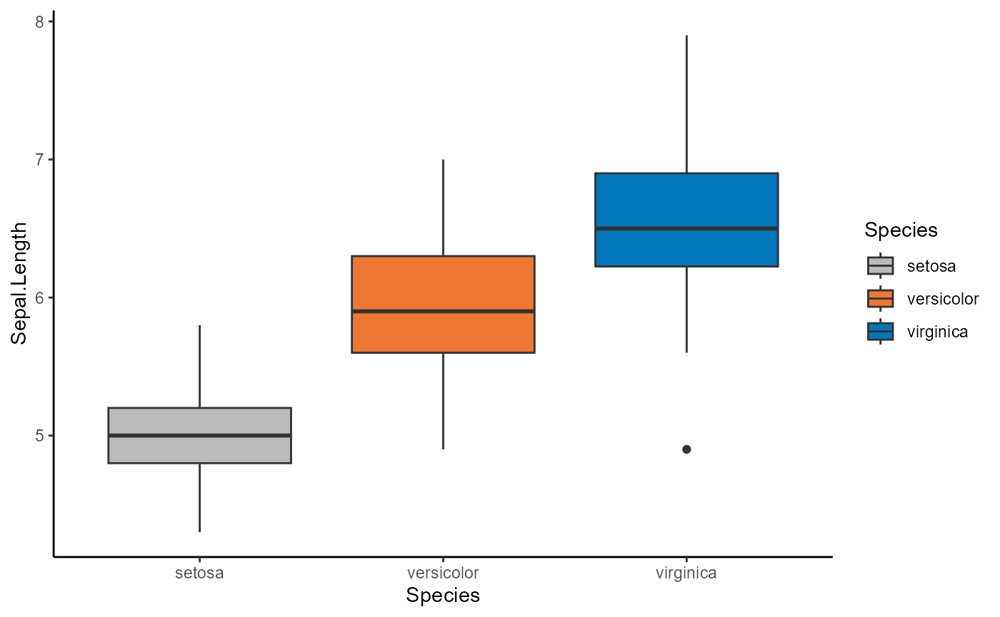
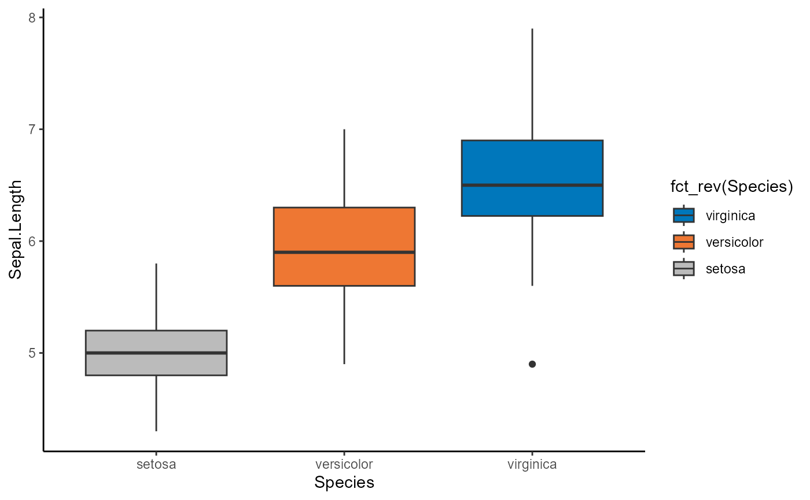
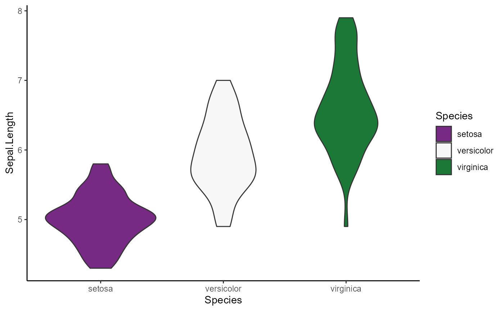

Palettes
Palettes.Rmd
library(ggplot2)
library(forcats)
library(unifrog)
#> Default ggplot theme set to unifrog_theme(). Unifrog colour palettes applied.Unifrog Colors
This extracts the unifrog palette colours as hex codes. Examples below.
unifrog_colors()
#> red orange yellow grey darkgrey lightblue blue
#> "#a50036" "#ff7901" "#c89801" "#cccccc" "#8c8c8c" "#17a0ff" "#1561c8"
#> green purple brown pink background main
#> "#33cc99" "#6815ad" "#b54f0d" "#ec44f2" "#FFFFFF" "#000000"
unifrog_colors("green", "lightblue", "darkgrey")
#> green lightblue darkgrey
#> "#33cc99" "#17a0ff" "#8c8c8c"unikn
You can view the palettes in a pretty way using the
unikn package
library(unikn)
#> Welcome to unikn (v0.8.0)!
#> ac() adjusts color transparency.
seecol(unifrog_colors(), main = "The entire Unifrog colour scheme")
seecol(unifrog_main, main = "The \"main\" palette is default for discrete data")
seecol(likert3, main = "The \"likert3\" palette is default for continuous data")
seecol(unifrog_palettes,
main = "The names of all of the Unifrog palettes",
pal_names = names(unifrog_palettes)
)
They have been grouped in three categories:
Discrete - ‘unifrog_main’
Sequential - ‘unifrog_blues’, ‘unifrog_greens’, ‘unifrog_oranges’, ‘unifrog_reds’
Diverging - ‘likert3’, ‘likert5’, ‘likert7’
scale_fill_unifrog
If no fill is specified, for a categorical variable, then the default
is scale_fill_unifrog_d("unifrog_main").
ggplot(iris, aes(x = Species, y = Sepal.Length, fill = Species)) +
geom_boxplot() +
theme_classic()You can see that the addition of line 4 has no effect on the output
ggplot(iris, aes(x = Species, y = Sepal.Length, fill = Species)) +
geom_boxplot() +
theme_classic() +
scale_fill_unifrog_d()
Addition of reverse = TRUE on line 4 starts from the
opposite end of the palette.
ggplot(iris, aes(x = Species, y = Sepal.Length, fill = Species)) +
geom_boxplot() +
theme_classic() +
scale_fill_unifrog_d(reverse = TRUE)
In order to guarantee the colour reversal for
unifrog_main use fct_rev in the fill
argument.
ggplot(iris, aes(x = Species, y = Sepal.Length, fill = fct_rev(Species))) +
geom_boxplot() +
theme_classic() +
scale_fill_unifrog_d()
If you want to use a different palette, you can specify it with the palette argument.
Note a sequential palette does not often make sense for bar charts.
ggplot(iris, aes(x = Species, y = Sepal.Length, fill = Species)) +
geom_violin() +
scale_fill_unifrog_d(palette = "unifrog_greens") +
theme_classic()
scale_color_unifrog
For continuous variables, the default is
scale_fill_unifrog_c("likert3")
ggplot(mpg, aes(x = displ, y = hwy, color = hwy)) +
geom_point() +
theme_bw()You can change this the same way as shown above but using the color aesthetic.
ggplot(mpg, aes(x = displ, y = hwy, color = hwy)) +
geom_point() +
scale_color_unifrog_c("likert5") +
theme_bw()